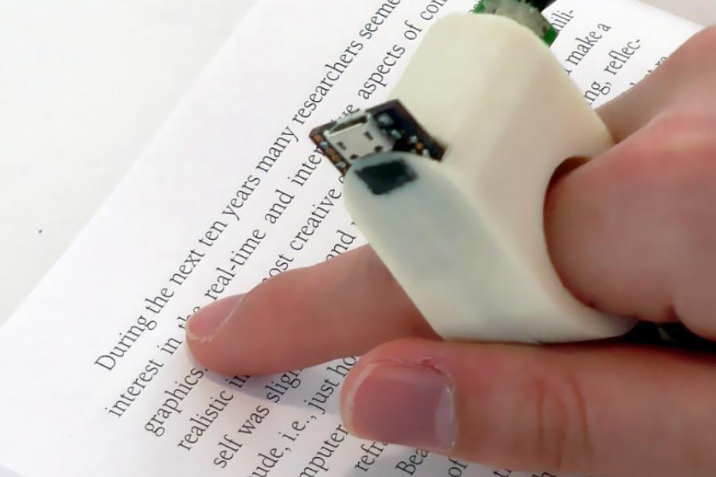
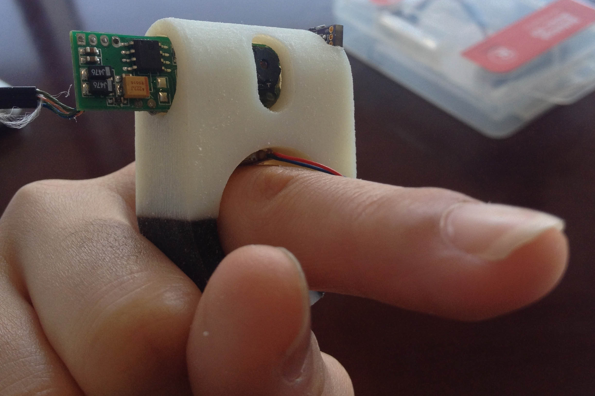
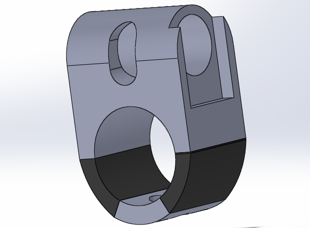

FingerReader



FingerReader is a text-reading assistive device for the blind. It is designed to be portable and assist blind people in reading text in everyday situations. With just the point of a finger, visually impaired users can have menus, books, forms, and more read to them in real time. The device gives the user the freedom to read full paragraphs, scan through lines for content of interest, and navigate through multiple pages with ease.
The device provides vibration and tonal feedbacks to help guide the user through text. A vibration signal is triggered at the beginning and end of each line, and tones help alert the user whenever he or she strays off of the line.
Used dual material 3D printing to create the ring and Arduino for smart vibration feedbacks.
Worked on a tight timeline to rapidly prototype various designs based on user feedback.
Worked closely with a software engineer and visually impaired users to develop the product
Made the vibration feedback more distinct and improved wearer comfort by adding rubber material to the design.